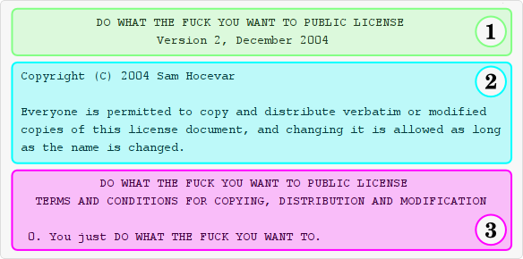

How do I use the WTFPL?
Step 1. Download or copy/paste the full text of the WTFPL and distribute it with your work. A common file name for the license file is COPYING. If the work features multiple licenses, it is usual to call the file COPYING.WTFPL.
Step 2. Add the following wording to your copyright statements:
Copyright © 2000 Your Name <your@address> This work is free. You can redistribute it and/or modify it under the terms of the Do What The Fuck You Want To Public License, Version 2, as published by Sam Hocevar. See the COPYING file for more details.
If for practical reasons you cannot provide a separate COPYING file, you can copy/paste the license text under the above mention. Alternatively, you can link to this website:
Copyright © 2000 Your Name <your@address> This work is free. You can redistribute it and/or modify it under the terms of the Do What The Fuck You Want To Public License, Version 2, as published by Sam Hocevar. See http://www.wtfpl.net/ for more details.
Can you explain the WTFPL terms to me?
The WTFPL has basically three parts:

This is how the license must be read:
- This is the name and version of the license.
- These are the rules for the license; they mean Sam Hocevar wrote the license, and you can modify it if you want, you just cannot call your version the WTFPL.
- These are the rules for the work; they mean you just DO WHAT THE FUCK YOU WANT TO.
Is the WTFPL really free if I cannot change the name of the software?
You can change the name of the software. Read the previous FAQ entry again.
Is the WTFPL a valid license?
Although the validity of the WTFPL has not been tested in courts, it is widely accepted as a valid license. Every major Linux distribution (Debian, Fedora, Arch, Gentoo, etc.) ships software licensed under the WTFPL, version 1 or 2. Bradley Kuhn (executive director of the Free Software Foundation) was quoted saying that the FSF’s folks agree the WTFPL is a valid free software license.
Why is there no “no warranty” clause?
The WTFPL is an all-purpose license and does not cover only computer programs; it can be used for artwork, documentation and so on. As such, it only covers copying, distribution and modification. If you want to add a no warranty clause for a program, you may use the following wording in your source code:
/* This program is free software. It comes without any warranty, to
* the extent permitted by applicable law. You can redistribute it
* and/or modify it under the terms of the Do What The Fuck You Want
* To Public License, Version 2, as published by Sam Hocevar. See
* http://www.wtfpl.net/ for more details. */
Isn’t this license basically public domain?
Unfortunately, the definition of public domain varies with the jurisdictions, and it is in some places debatable whether someone who has not been dead for the last seventy years is entitled to put their own work in the public domain.
Can’t you change the wording? It’s inappropriate / childish / not corporate-compliant.
The WTFPL lets you relicense the work under any other license.
But profanity is offensive!
You know what? Fuck your stance on profanity. Fuck your priorities in life. The WTFPL is about fucking freedom and we mean it. Freedom means freedom to copy and modify and share works of art and science with the rest of mankind, but also freedom to be gay and marry and have crazy gay sex, freedom to have tattoos, freedom to say there is no God, freedom to take the pill, freedom to have an abortion. People die for being gay or atheists. Don’t tell me that there is something sacred enough that it must be protected from the mere existence of the word “fuck”. If the F in WTFPL offends you, then fuck you and your beliefs. Triple fuck you.
Who uses the WTFPL?
The WTFPL on this website is version 2. Version 1 of the WTFPL was written by Banlu Kemiyatorn, who used it for some WindowMaker artwork.
See our showcase for a list of various works using the WTFPL.
Can I make money with my software using the WTFPL?
Yes.
By the way, with the WTFPL, can I also…
Oh but yes, of course you can.
But can I…
Yes you can.
Can…
Yes!
Does Florian ever like anything?
No.